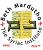
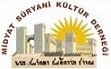

Surayt-Aramaic Online Project
(2017-2020)
Partners
FREIE UNIVERSITÄT BERLIN (DE, Coordinator)
STOCKHOLMS UNIVERSITET (SE)
SYRISCH-ORTHODOXE KERK VAN ANTIOCHIË (NL)
BETH MARDUTHO: THE SYRIAC INSTITUTE (US)
MIDYAT SÜRYANI KÜLTÜR DERNEGI (TR)
Description
Surayt-Aramaic Online Project (SAOP) aims at developing the Surayt-Online course for intermediary and advanced levels (B1-2, C1 and C2) and producing additional linguistic material for the teaching of Surayt (also known as Turoyo).
Surayt is a Neo-Aramaic language belonging to the Aramaic branch of the Semitic language family, which is enlisted as “severely endangered” by the UNESCO. It is spoken by the Syriac Christians (also known as Assyrians and Arameans) in different countries in the Middle East. Surayt is a non-recognized minority language in the Middle East where it has been repressed and excluded from any official education. Due to the mass emigration of its speakers, the language has drastically weakened, and the number of active speakers in the Western diaspora is rapidly decreasing, particularly among the second and third generations.
In order to fill in the gap of Surayt language courses according to the Common European Framework of Reference for Languages, the project partners have formulated the following aims and objectives:
- Completing and improving the previously developed Surayt online course at B1-2 and C1 levels;
- Providing the online course in seven languages of instruction (English, German, Swedish, French, Dutch, Arabic and Turkish);
- Developing a “Reader” for Surayt (digital text corpus) which will be equivalent to C2 level and address the needs of more advanced learners;
- Supporting the online course with textbooks and webinars;
- Designing and developing a learner app to support the online course and increase the interactive level of learners;
- Transferring knowledge and expertise by providing training to educators, experts and academics who are working both in Surayt and in other minority languages which are facing endangerment and spoken in Europe.
- Organizing virtual classrooms and annual summer schools for young learners at St Ephrem Monastery;
- Disseminating the project achievements through seminars and meetings with user communities and stakeholders
The project consortium has an interdisciplinary character and consists of Freie Universität Berlin (coordinator), Stockholms Universitet, St Ephrem Syriac Orthodox Monastery in the Netherlands, Beth Mardutho Syriac Institute in the USA, and Midyat Süryani Cultural Association in Turkey. Overall, the project results are expected to have a remarkable impact on the future viability and vitality of this endangered language.
SAOP is co-funded by the Erasmus+ programme, Strategic Partnerships for higher education (2017-1-DE01-KA203-003573).


 